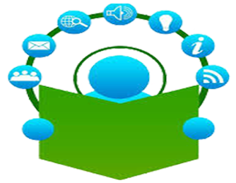
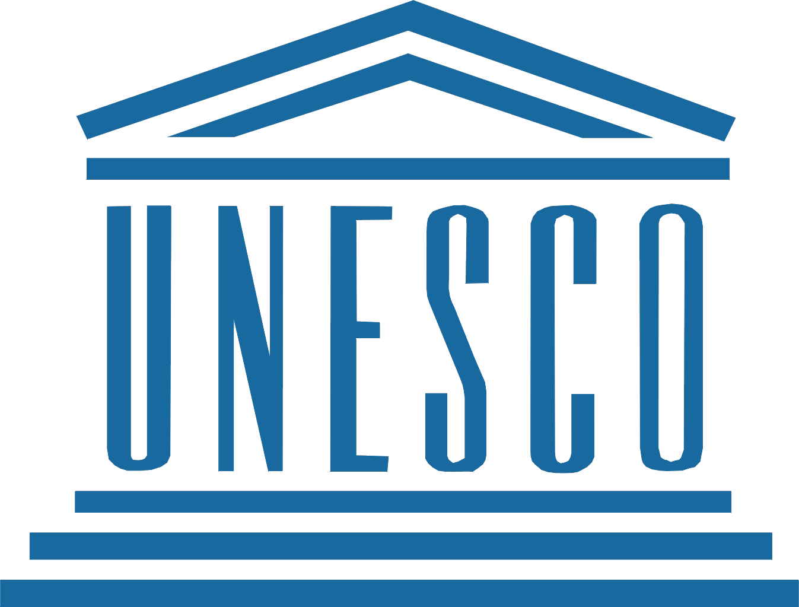

Loading Media Literacy Initiative
Loading website content, please wait...

Join us in creating a more informed and discerning society through media and information literacy education.
In 2019, the co-founders of the Students’ Media and Information Literacy Club (SMILC), Josiah and Korede, were inspired while taking the elective course POS 353: Media and the State, taught by Professor Aituaje Irene Pogoson in the Department of Political Science, University of Ibadan, Nigeria. Motivated by the insights gained, they set out to promote ethical media use by providing training for individuals, particularly students and young people, on responsible and informed engagement with the media....
To equip students and young people with the knowledge, skills, and values needed for ethical, responsible, and informed use of media through training, advocacy, and capacity-building initiatives.
To promote a generation of ethically conscious and media-literate citizens who engage constructively with information and communication platforms to drive positive societal change.
.jpg)
Media and Information Literacy (MIL) is essential in today’s digital age, where information flows rapidly across multiple platforms.
It empowers individuals, especially students and young people, to critically evaluate content, discern credible sources, and engage responsibly in online and offline spaces.
MIL promotes ethical communication, counters misinformation, and promotes informed decision-making.
The development of these competencies will make individuals become active and responsible participants in democratic processes and community development.

MILCON

UNESCO